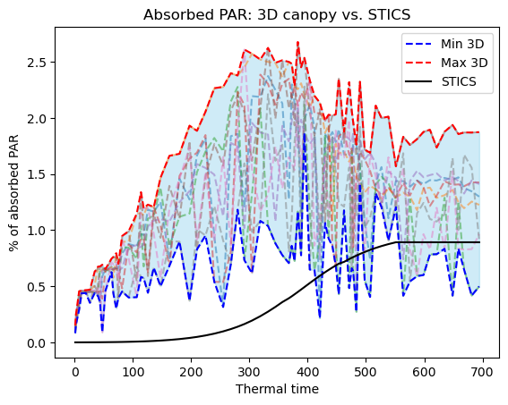

## Imports
import time as t
import math
import numpy as np
from random import *
import matplotlib.pyplot as plt
from scipy.stats import qmc
from oawidgets.plantgl import *
from openalea.plantgl.all import Material, Color3, Scene, Viewer
from alinea.astk import *
from openalea.archicrop.display import build_scene
from openalea.archicrop.simulation import retrieve_stics_dynamics_from_file, dict_ranges_to_all_possible_combinations, generate_single_list_dicts, LHS_param_sampling, params_for_curve_fit
from openalea.archicrop.archicrop import ArchiCrop
from openalea.archicrop.plant_shape import compute_leaf_area_growing_plant, compute_height_growing_plant
from openalea.archicrop.light_it import compute_light_inter
from openalea.archicrop.stand import agronomic_plot
# Enable plotting with PlantGL
%gui qt
# Set nice color for plants
nice_green=Color3((50,100,0))5 Light interception with Caribu
5.1 Retrieve STICS dynamics from file
stics_output_file = 'mod_ssorghum.sti'
sowing_density = 10
inter_row = 0.4
stics_output_data = retrieve_stics_dynamics_from_file(stics_output_file, sowing_density)
time = [value["Thermal time"] for value in stics_output_data.values()]
LA_stics = [value["Plant leaf area"] for value in stics_output_data.values()]
height_stics = [value["Plant height"] for value in stics_output_data.values()]
par_stics = [value["Absorbed PAR"] for value in stics_output_data.values()]
height_potential_plant = max(height_stics)5.2 Vary chosen architectural and developmental parameters and select the sets of parameters that make the model fit
# Define parameter bounds
# For sorghum
archi_params = dict(
nb_phy = [10,30], # [10,15,20,25,30],
max_leaf_length = [50,120],
wl = [0.1,0.12],
diam_base = 2.2,
diam_top = 1.5,
insertion_angle = 30, # to vary for light interception
scurv = 0.7, # to vary for light interception
curvature = 90, # to vary for light interception
alpha = -2.3,
stem_q = [1.01,1.2],
rmax = [0.6,0.9], # 1-(1/3*(nb_phy - 5)/nb_phy)
skew = [0.01, 0.1], # 0.08 # 0.0005
phyllotactic_angle = 180,
phyllotactic_deviation = 15, # to vary for light interception
phyllochron = [30,46],
plastochron = [30,46],
leaf_duration = [1,6],
stem_duration = [1,5],
leaf_senescence = [550, 900]
)# Function to process parameters and generate samples
# Generate parameter sets
param_sets = LHS_param_sampling(archi_params, n_samples=1000)# Select parameters sets for which the model fits the LAI and the height curves of the crop model, with a given error.
# Start the timer
start_time = t.time()
fitting_sim = params_for_curve_fit(param_sets, curves=stics_output_data, error_LA=200, error_height=20)
# End the timer
end_time = t.time()
# Calculate elapsed time
elapsed_time = (end_time - start_time)/60
print(f"Elapsed time: {elapsed_time:.4f} minutes")Elapsed time: 43.0187 minutes# Create a figure with two subplots side by side
fig, axes = plt.subplots(1, 2, figsize=(12, 6)) # 1 row, 2 columns
# Plot on the first subplot
axes[0].plot(time, LA_stics, color="black", label="LA STICS")
for result in fitting_sim['LA']:
axes[0].plot(time, result)
axes[0].set_xlabel("Thermal time (°C.day)")
axes[0].set_ylabel("Leaf Area / plant")
axes[0].set_title("Leaf Area: 3D canopy vs. STICS")
axes[0].legend()
# Plot on the second subplot
axes[1].plot(time, height_stics, color="black", label="height STICS")
for result in fitting_sim['height']:
axes[1].plot(time, result)
axes[1].set_xlabel("Thermal time (°C.day)")
axes[1].set_ylabel("Plant height")
axes[1].set_title("Plant height: 3D canopy vs. STICS")
axes[1].legend()
# Adjust layout
plt.tight_layout()
# Show the plot
plt.show()good_params = fitting_sim['params']
good_params[{'diam_base': 2.2,
'diam_top': 1.5,
'insertion_angle': 30,
'scurv': 0.7,
'curvature': 90,
'alpha': -2.3,
'phyllotactic_angle': 180,
'phyllotactic_deviation': 15,
'nb_phy': 11,
'max_leaf_length': 99.38953022234557,
'wl': 0.10669701997307109,
'stem_q': 1.1930546737497694,
'rmax': 0.7975932479443661,
'skew': 0.07599447227024302,
'phyllochron': 40.10762088180296,
'plastochron': 43.734086882182844,
'leaf_duration': 3.745165180939094,
'stem_duration': 2.6693719793972353,
'leaf_senescence': 616.4863456859163},
{'diam_base': 2.2,
'diam_top': 1.5,
'insertion_angle': 30,
'scurv': 0.7,
'curvature': 90,
'alpha': -2.3,
'phyllotactic_angle': 180,
'phyllotactic_deviation': 15,
'nb_phy': 13,
'max_leaf_length': 118.1105694869254,
'wl': 0.1093480966460198,
'stem_q': 1.1497200137218366,
'rmax': 0.8416458176468843,
'skew': 0.08228427264284736,
'phyllochron': 32.493791911914386,
'plastochron': 43.56492110137314,
'leaf_duration': 1.2016372244702727,
'stem_duration': 3.734316120177147,
'leaf_senescence': 650.8653645051161},
{'diam_base': 2.2,
'diam_top': 1.5,
'insertion_angle': 30,
'scurv': 0.7,
'curvature': 90,
'alpha': -2.3,
'phyllotactic_angle': 180,
'phyllotactic_deviation': 15,
'nb_phy': 11,
'max_leaf_length': 103.48584641182546,
'wl': 0.10890929549672723,
'stem_q': 1.1924904198138533,
'rmax': 0.801533870017076,
'skew': 0.08867506888742169,
'phyllochron': 36.625128549162646,
'plastochron': 42.20800198334537,
'leaf_duration': 3.734386676241516,
'stem_duration': 4.004192887644081,
'leaf_senescence': 564.3730219089649},
{'diam_base': 2.2,
'diam_top': 1.5,
'insertion_angle': 30,
'scurv': 0.7,
'curvature': 90,
'alpha': -2.3,
'phyllotactic_angle': 180,
'phyllotactic_deviation': 15,
'nb_phy': 10,
'max_leaf_length': 92.22268298824724,
'wl': 0.11091366426887748,
'stem_q': 1.1433860724719365,
'rmax': 0.771433756797771,
'skew': 0.047435526778279426,
'phyllochron': 44.45272651404066,
'plastochron': 39.471730874055595,
'leaf_duration': 5.4802652177158215,
'stem_duration': 2.7834247369680067,
'leaf_senescence': 658.8409166865579},
{'diam_base': 2.2,
'diam_top': 1.5,
'insertion_angle': 30,
'scurv': 0.7,
'curvature': 90,
'alpha': -2.3,
'phyllotactic_angle': 180,
'phyllotactic_deviation': 15,
'nb_phy': 11,
'max_leaf_length': 92.73439315497939,
'wl': 0.11604108071175104,
'stem_q': 1.0289385173595034,
'rmax': 0.6177958466512076,
'skew': 0.07019892739534422,
'phyllochron': 41.49646808670554,
'plastochron': 44.45599073202125,
'leaf_duration': 5.382455026500954,
'stem_duration': 2.5677463031300007,
'leaf_senescence': 653.1045778015482},
{'diam_base': 2.2,
'diam_top': 1.5,
'insertion_angle': 30,
'scurv': 0.7,
'curvature': 90,
'alpha': -2.3,
'phyllotactic_angle': 180,
'phyllotactic_deviation': 15,
'nb_phy': 14,
'max_leaf_length': 92.83961596578551,
'wl': 0.10031167052371445,
'stem_q': 1.0590545596113439,
'rmax': 0.7527045964023171,
'skew': 0.02256555190068299,
'phyllochron': 37.59576025447681,
'plastochron': 34.21382895687567,
'leaf_duration': 3.900290737357563,
'stem_duration': 2.8780297055204076,
'leaf_senescence': 871.8843364675288},
{'diam_base': 2.2,
'diam_top': 1.5,
'insertion_angle': 30,
'scurv': 0.7,
'curvature': 90,
'alpha': -2.3,
'phyllotactic_angle': 180,
'phyllotactic_deviation': 15,
'nb_phy': 12,
'max_leaf_length': 88.89606058255535,
'wl': 0.11062711435124575,
'stem_q': 1.1166192931631107,
'rmax': 0.8666496205283223,
'skew': 0.07490959075445477,
'phyllochron': 35.88509350615921,
'plastochron': 39.37937887515632,
'leaf_duration': 3.9150978252799193,
'stem_duration': 3.68072729459966,
'leaf_senescence': 767.1221147790122},
{'diam_base': 2.2,
'diam_top': 1.5,
'insertion_angle': 30,
'scurv': 0.7,
'curvature': 90,
'alpha': -2.3,
'phyllotactic_angle': 180,
'phyllotactic_deviation': 15,
'nb_phy': 15,
'max_leaf_length': 105.71012584433498,
'wl': 0.11194957780559224,
'stem_q': 1.1540239470422693,
'rmax': 0.849411118397879,
'skew': 0.08984296774162541,
'phyllochron': 33.12704026193683,
'plastochron': 43.30263510500918,
'leaf_duration': 2.021267804677813,
'stem_duration': 2.5302271765651745,
'leaf_senescence': 863.974465040651}]# Align `good_params` to `archi_params` order
aligned_good_params = [{key: p[key] for key in archi_params.keys()} for p in good_params]
# Initialize dictionaries for min and max values
min_values = {}
max_values = {}
# Calculate min and max for each parameter
for key in archi_params.keys():
if isinstance(archi_params[key], list): # Only for list parameters
# Extract values for this key across all good_params
values = [p[key] for p in aligned_good_params]
min_values[key] = min(values)
max_values[key] = max(values)
# Update `archi_params` with min and max for list parameters
for key, value in archi_params.items():
if isinstance(value, list): # Only update list parameters
archi_params[key] = [min_values[key], max_values[key]]
print(f"{key}: {[round(val, 3) for val in archi_params[key]]}")
# Ensure all parameters in `archi_params` are lists
def to_list(d):
return {k: (v if isinstance(v, list) else [v]) for k, v in d.items()}
archi_params = to_list(archi_params)
# Display updated `archi_params`
print("Updated archi_params:", archi_params)nb_phy: [10, 15]
max_leaf_length: [88.896, 118.111]
wl: [0.1, 0.116]
stem_q: [1.029, 1.193]
rmax: [0.618, 0.867]
skew: [0.023, 0.09]
phyllochron: [32.494, 44.453]
plastochron: [34.214, 44.456]
leaf_duration: [1.202, 5.48]
stem_duration: [2.53, 4.004]
leaf_senescence: [564.373, 871.884]
Updated archi_params: {'nb_phy': [10, 15], 'max_leaf_length': [88.89606058255535, 118.1105694869254], 'wl': [0.10031167052371445, 0.11604108071175104], 'diam_base': [2.2], 'diam_top': [1.5], 'insertion_angle': [30], 'scurv': [0.7], 'curvature': [90], 'alpha': [-2.3], 'stem_q': [1.0289385173595034, 1.1930546737497694], 'rmax': [0.6177958466512076, 0.8666496205283223], 'skew': [0.02256555190068299, 0.08984296774162541], 'phyllotactic_angle': [180], 'phyllotactic_deviation': [15], 'phyllochron': [32.493791911914386, 44.45272651404066], 'plastochron': [34.21382895687567, 44.45599073202125], 'leaf_duration': [1.2016372244702727, 5.4802652177158215], 'stem_duration': [2.5302271765651745, 4.004192887644081], 'leaf_senescence': [564.3730219089649, 871.8843364675288]}
################# in function ##################
# Visualize the plants with these parameters
from ipywidgets import interact, interactive, IntSlider, FloatSlider, fixed, Play, HBox, VBox, jslink
# Fix a seed
seed(100)
nice_green = Color3((50, 100, 0))
# slider on parameters with ranges, others fixed
height=height_potential_plant
nb_phy_slider=IntSlider(min=min(archi_params["nb_phy"]), max=max(archi_params["nb_phy"]), step=1, value=15, description="Nb of phytomers")
max_leaf_length_slider=IntSlider(min=min(archi_params["max_leaf_length"]), max=max(archi_params["max_leaf_length"]), step=1, value=50, description="Length of longest leaf")
wl_slider=FloatSlider(min=min(archi_params["wl"]), max=max(archi_params["wl"]), step=0.01, value=0.12)
diam_base_slider=fixed(archi_params["diam_base"][0])
diam_top_slider=fixed(archi_params["diam_top"][0])
insertion_angle_slider=IntSlider(min=min(archi_params["insertion_angle"]), max=max(archi_params["insertion_angle"]), step=1, value=30)
scurv_slider=FloatSlider(min=min(archi_params["scurv"]), max=max(archi_params["scurv"]), step=0.01, value=0.7)
curvature_slider=IntSlider(min=min(archi_params["curvature"]), max=max(archi_params["curvature"]), step=5, value=90)
alpha_slider=fixed(archi_params["alpha"][0])
stem_q_slider=fixed(archi_params["stem_q"][0])
rmax_slider=FloatSlider(min=min(archi_params["rmax"]), max=max(archi_params["rmax"]), step=0.01, value=0.8)
skew_slider=fixed(archi_params["skew"][0])
phyllotactic_angle_slider=fixed(archi_params["phyllotactic_angle"][0])
phyllotactic_deviation_slider=IntSlider(min=min(archi_params["phyllotactic_deviation"]), max=max(archi_params["phyllotactic_deviation"]), step=5, value=15)
phyllochron_slider=IntSlider(min=min(archi_params["phyllochron"]), max=max(archi_params["phyllochron"]), step=1, value=55)
plastochron_slider=IntSlider(min=min(archi_params["plastochron"]), max=max(archi_params["plastochron"]), step=1, value=40)
leaf_duration_slider=FloatSlider(min=min(archi_params["leaf_duration"]), max=max(archi_params["leaf_duration"]), step=0.1, value=3)
stem_duration_slider=FloatSlider(min=min(archi_params["stem_duration"]), max=max(archi_params["stem_duration"]), step=0.1, value=2)
leaf_senescence_slider=IntSlider(min=min(archi_params["leaf_senescence"]), max=max(archi_params["leaf_senescence"]), step=10, value=800)
time_slider = IntSlider(value=0, min=0, max=len(time), step=1, description="Time")
# Interactive widget setup
play_widget = Play(value=0, min=0, max=len(time), step=1, interval=1000)
# Link play widget with time slider
jslink((play_widget, 'value'), (time_slider, 'value'))
# Callback to update scene
def update_scene(*args):
seed(100)
sorghum = ArchiCrop(height, nb_phy_slider.value, max_leaf_length_slider.value, wl_slider.value,
diam_base_slider.value, diam_top_slider.value, insertion_angle_slider.value, scurv_slider.value,
curvature_slider.value, alpha_slider.value, stem_q_slider.value, rmax_slider.value, skew_slider.value,
phyllotactic_angle_slider.value, phyllotactic_deviation_slider.value,
phyllochron_slider.value, plastochron_slider.value, leaf_duration_slider.value,
stem_duration_slider.value, leaf_senescence_slider.value)
sorghum.generate_potential_plant()
sorghum.define_development()
growing_plant = sorghum.grow_plant(stics_output_data)
growing_plant_mtg = list(growing_plant.values())
Viewer.display(build_scene(growing_plant_mtg[time_slider.value], leaf_material = Material(nice_green), stem_material=Material(nice_green))[0])
# Attach update callback
nb_phy_slider.observe(update_scene, names='value')
max_leaf_length_slider.observe(update_scene, names='value')
# insertion_angle_slider.observe(update_scene, names='value')
# scurv_slider.observe(update_scene, names='value')
# curvature_slider.observe(update_scene, names='value')
time_slider.observe(update_scene, names='value')
# Display widgets
controls = VBox([nb_phy_slider, max_leaf_length_slider, insertion_angle_slider, scurv_slider, curvature_slider, HBox([time_slider, play_widget])])
display(controls)
# Initial scene display
update_scene()
# cf github openalea weberpenn trunk_parameters# # Calculate covariance matrix
# covariance_matrix = np.cov(parameters, rowvar=False)
# # Calculate correlation matrix
# correlation_matrix = np.corrcoef(parameters, rowvar=False)
# # Display results
# print("Covariance matrix:\n", covariance_matrix)
# print("Correlation matrix:\n", correlation_matrix)# from sklearn.decomposition import PCA
# # Perform PCA
# pca = PCA()
# pca.fit(parameters)
# # Principal components and explained variance
# print("Principal components:\n", pca.components_)
# print("Explained variance ratio:", pca.explained_variance_ratio_)# from sklearn.cluster import KMeans
# # Perform clustering
# num_clusters = 2 # Adjust as needed
# kmeans = KMeans(n_clusters=num_clusters, random_state=42)
# clusters = kmeans.fit_predict(parameters)
# # Add cluster labels to parameter sets
# print("Cluster labels:", clusters)# import pandas as pd
# import seaborn as sns
# # Heatmap of correlation matrix
# plt.figure(figsize=(10, 8))
# sns.heatmap(correlation_matrix, annot=True, cmap="coolwarm", fmt=".2f")
# plt.title("Parameter Correlation Matrix")
# plt.show()5.4 Stand
sorghum = ArchiCrop(height, **good_params[0])
# nb_phy, max_leaf_length, wl,
# diam_base, diam_top, insertion_angle, scurv,
# curvature, alpha, stem_q, rmax, skew,
# phyllotactic_angle, phyllotactic_deviation,
# phyllochron, plastochron, leaf_duration,
# stem_duration, leaf_senescence)
sorghum.generate_potential_plant()
scene = sorghum.display_stand(sowing_density=sowing_density, length_plot=1, width_plot=1, inter_row=0.4)
PlantGL(scene)# Store scenes for MTG at all times
sorghum.define_development()
growing_plant = sorghum.grow_plant(stics_output_data)
nplants, positions, domain, domain_area, unit = agronomic_plot(length=1, width=1, sowing_density=10, inter_row=0.4, noise=0.1)
scenes = {}
for k,v in growing_plant.items():
scene, nump = build_scene([v]*nplants, positions, leaf_material=Material(nice_green), stem_material=Material(nice_green))
scenes[k] = scene
5.5 Compute PAR intercepted
nplants, positions, domain, domain_area, unit = agronomic_plot(length=1, width=1, sowing_density=10, inter_row=0.4, noise=0.1)
par_caribu = []
scenes = []
# Start the timer
start_time = t.time()
for params in good_params:
sorghum = ArchiCrop(height, **params)
sorghum.generate_potential_plant()
sorghum.define_development()
growing_plant = sorghum.grow_plant(stics_output_data)
scenes_temp = {}
for k,v in growing_plant.items():
scene, nump = build_scene([v]*nplants, positions, leaf_material=Material(nice_green), stem_material=Material(nice_green))
scenes_temp[k] = scene
scenes.append(scenes_temp)
par_caribu_temp = []
for scene in scenes_temp.values():
par_caribu_temp.append(compute_light_inter(scene))
par_caribu.append(par_caribu_temp)
# End the timer
end_time = t.time()
# Calculate elapsed time
elapsed_time = (end_time - start_time)/60
print(f"Elapsed time: {elapsed_time:.4f} minutes")Elapsed time: 20.7545 minutes# Convert to a NumPy array for easier manipulation
for i,par in enumerate(par_caribu):
for j,p in enumerate(par):
par_caribu[i][j] /= 10
curves = par_caribu
curves_array = np.array(curves)
# Calculate the envelope: min and max values for each time point
min_values = curves_array.min(axis=0)
max_values = curves_array.max(axis=0)
# Plotting the envelope along with individual curves for context
time_points = time
for curve in curves:
plt.plot(time_points, curve, alpha=0.5, linestyle='--') # Plot each curve (optional for visualization)
plt.fill_between(time_points, min_values, max_values, color="skyblue", alpha=0.4)
plt.plot(time_points, min_values, color="blue", linestyle="--", label="Min 3D")
plt.plot(time_points, max_values, color="red", linestyle="--", label="Max 3D")
plt.plot(time_points, par_stics, color="black", label="STICS")
# plt.scatter(time_points, LA_stics)
# Labels and legend
plt.xlabel("Thermal time")
plt.ylabel("% of absorbed PAR")
plt.title("Absorbed PAR: 3D canopy vs. STICS")
plt.legend()
plt.show()
5.6 Compute Beer-Lambert light extinction coefficient at each time step
5.6.1 Light interception in STICS
The radiation intercepted by the crop \(raint\) is expressed according to a Beer’s law function of \(lai\). The \(extinP\) parameter is a daily extinction coefficient and \(parsurrgG\) is a climatic parameter corresponding to the ratio (in radiative energy) of photosynthetically active radiation to the global radiation \(trg(t)\) (around 0.48, Varlet-Grancher et al. (1982)).
\[raint(t)=0.95*parsurrgG*trg(t)*(1−exp^{−extinP*(lai(t)+eai(t))})\]
\[extinP = - \frac{1}{lai(t)+eai(t)} ln(1 - \frac{raint(t)}{0.95*parsurrgG*trg(t)})\]
\[extinP = - \frac{1}{lai(t)+eai(t)} ln(1 - ratio\_par\_abs)\]
extin_stics = 0.7
# Compute coef extinP
extinP_list = []
for par_time_series in par_caribu:
extinP_per_sim = []
for i,par in enumerate(par_time_series):
if par < 1:
lai = LAI_stics[i]*sowing_density/10000
extinP = -1/lai * math.log(1-par)
else:
extinP = 1
extinP_per_sim.append(extinP)
extinP_list.append(extinP_per_sim)
time_points = time[1:]
for curve in extinP_list:
plt.plot(time_points, curve, alpha=0.5, linestyle='-')
plt.show()--------------------------------------------------------------------------- NameError Traceback (most recent call last) Cell In[20], line 9 7 for i,par in enumerate(par_time_series): 8 if par < 1: ----> 9 lai = LAI_stics[i]*sowing_density/10000 10 extinP = -1/lai * math.log(1-par) 11 else: NameError: name 'LAI_stics' is not defined
# courbe parameters beer-lambert --> analysis of decomposition of uncertainty, parametric5.7 Next steps
- Simulations to run with IFB Cloud